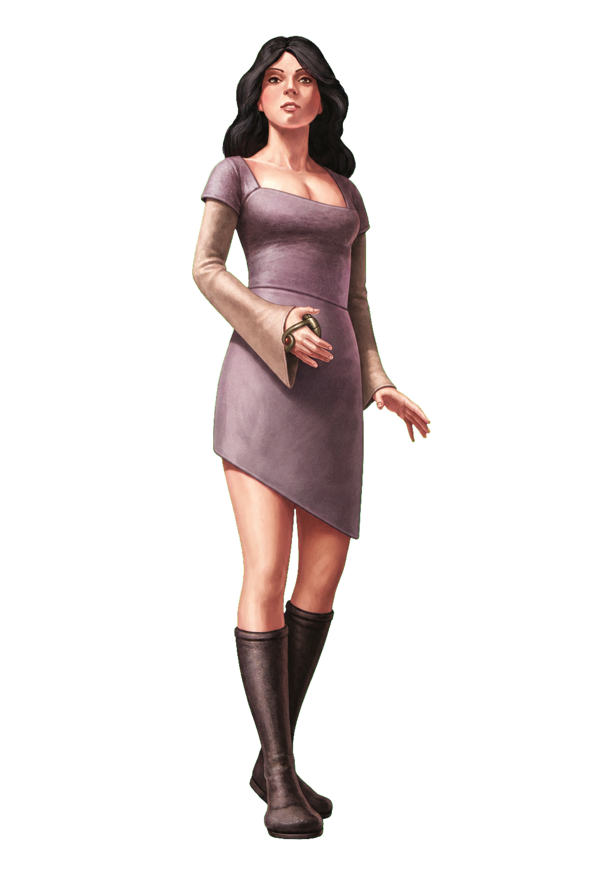

Diplomat · Moderate
Maste / Bythal
Tok'ra · cultural bridge and team coordinator

Bring people together, keep the team confident, and turn one ally's success into another.
Newly joined, Maste and Bythal carry healing instincts, intelligence experience, and a calling to make peaceful contact across the galaxy.
You are great at
- First contact, persuasion, and reading motives
- Inspiring the whole team before danger
- Culture, medicine, disguise, and recovery scenes
Notice first: Inspire grants temporary HP and unlocks team benefits; Coordinated Fire helps an inspired teammate follow your attack.
Open Maste / Bythal PDF
4 pages · verified player packet